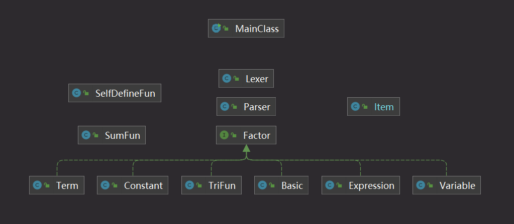
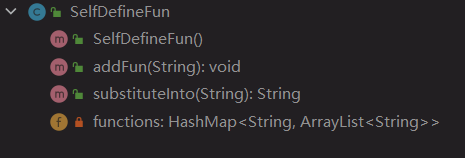
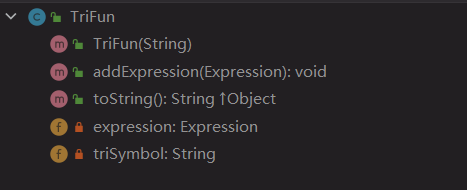
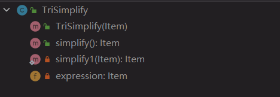

面向对象设计与构造第一单元第二次作业
表达式展开
题目
分析
本次作业是在第一次作业的基础之上对多项式的括号展开，并且化简输出，相比于第一次作业，本次作业新增了三种函数，以及拓展了一些数据显示或者实现上的细节。因此，在第一次作业的基础上，进行迭代开发，将新增要求一一实现即可。
需求变更
新增内容:
三角函数：
- 三角函数 $\rightarrow$ ‘sin’ 空白项 ‘(‘ 空白项 因子 空白项 ‘)’ [空白项 指数] | ‘cos’ 空白项 ‘(‘ 空白项 因子 空白项 ‘)’ [空白项 指数]
自定义函数
- 自定义函数定义 $\rightarrow$ 自定义函数名 ‘(‘ 空白项 函数自变量 空白项 [‘,’ 空白项 函数自变量 空白项 [‘,’ 空白项 函数自变量 空白项]] ‘)’ 空白项 ‘=’ 空白项 函数表达式
- 函数自变量 $\rightarrow$ ‘x’ | ‘y’ | ‘z’
- 自定义函数调用 $\rightarrow$ 自定义函数名 空白项 ‘(‘ 空白项 因子 空白项 [‘,’ 空白项 因子 空白项 [‘,’ 空白项 因子 空白项]] ‘)’
- 自定义函数名 $\rightarrow$ ‘f’ | ‘g’ | ‘h’
求和函数
- 求和函数 $\rightarrow$ ‘sum’ ‘(‘ 空白项 i 空白项’,’ 空白项 常数因子 空白项 ‘,’ 空白项 常数因子 空白项 ‘,’ 空白项 求和表达式 空白项 ‘)’
数据限制变更:
指数变更：
- 指数输入、计算过程中和最终计算结果最高次为 8 $\rightarrow$ 指数输入最高次为 8 且 互测对指数无要求 （已于第一次作业开发完成）
括号嵌套：
- 本次作业可能会存在多层括号嵌套 （已于第一次作业开发完成）
迭代开发
总UML类图：
新增：
求和函数类
SumFun- 该类带有一个处理方法，用于字符串的预处理，将输入字符串中所有的 sum 函数展开，返回处理后的字符串
- 如：
sum(i, 1, 3, (i*x))处理为((1*x)+(2*x)+(3*x)) - tips: 直接
replaceAll的小心"sin"里面也有个"i" - tips:
sum的上下限需要用BigInter
自定义函数类
SelfDefineFun- 该类的
addFun方法读入一个自定义函数表达式，以HashMap<String, ArrayList<String>>的形式保存于该类中 - 如：
f(x,y,z)=x+y**2+z**3存储为HashMap<f,[x, y, z, (x+y**2+z**3)]> - 该类亦带有一个处理方法，同样用于字符串的预处理，将本类中所存的所有自定义函数都代入输入字符串中，并返回处理后的字符串
- 如：
自定义函数为：f(x,y,z)=x+y**2+z**3 ; 待处理表达式为：f(sin(x)**2,cos(x),x) ;处理为((sin(x)**2)+(cos(x))**2+(x)**3) - tips: 需要先替换
x以免出现x的重复代入
- 该类的
三角函数类
TriFun- 该类在递归下降算法中位于
Experssion类之上，具有addExpression方法用于递归 - 使用一个字符串用于记录三角函数具体类型（
sin/cos） - 重写
toString方法，把保存在该类中存储的表达式并输出三角函数类型（视为单目运算符）
- 该类在递归下降算法中位于
三角函数化简类
TriSimplify- 该类用于将一个
Item类中符合三角函数化简规则的项进行运算并化简，返回一个处理后的Item类
- 该类用于将一个
修改：
读取处理类
Lexer- 增加
sin和cos识别 - 变更识别变量
x为识别所有自变量、
- 增加
解析类
Parser- 递归下降算法输出后缀表达式时加入三角函数类，输出时将三角函数视为单目运算符（即增加
parseTriFun方法） - 变更识别变量
x为识别所有自变量
- 递归下降算法输出后缀表达式时加入三角函数类，输出时将三角函数视为单目运算符（即增加
多项式类
Item- 需要重构： 该类在第一次作业中只涉及变量
x的计算，在本次作业中要涉及多变量计算（把三角函数作用于表达式后的整体视作一个自变量（原因：无法与x合并，具有自己独立的系数和指数） ） - 将多项式以
HashMap<HashMap<String, BigInteger>, BigInteger>的形式保存于该类中 - 如：
5*x*sin(x**2)**2保存为HashMap<HashMap(<x,1> & <sin(x**2),2>),5> - 根据新类型重构
add/sub/mul/pow (+/-/*/**)方法 - 新增
sin/cos方法，作用为把表达式用sin()/cos()包裹并定义为新自变量
- 需要重构： 该类在第一次作业中只涉及变量
优化小方法：
- 若
<因子>的长度为1, 则把<因子>**2用<因子>*<因子>替换。（Warning:若是三角函数中 "<因子>**2" 则不能应用此变换，原因为不符合本次作业中的形式化表述） - 把多项式的首个非负项放在表达式首位显示
- 三角函数恒等变形（变形需要能使表达式长度缩减）
项*sin(<因子>)**2 + 项*cos(<因子>)**2$\rightarrow$项sin(0)$\rightarrow$0，cos(0)$\rightarrow$1sin(-<因子>)$\rightarrow$-sin(<因子>),cos(-<因子>)$\rightarrow$cos(<因子>)a + b*sin/cos(<因子>)**2$\rightarrow$(a+b) - b*cos/sin(<因子>)**22 * sin(<常数因子>) * cos(<常数因子>)$\rightarrow$sin(<常数因子> * 2)- 其余化简方法成立判断条件以及处理方式太过复杂，无实现思路，暂未实现
- ……
by Tan